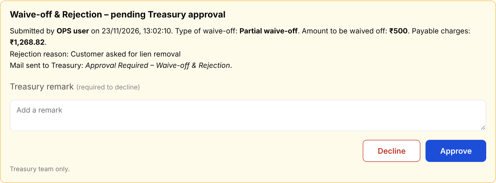
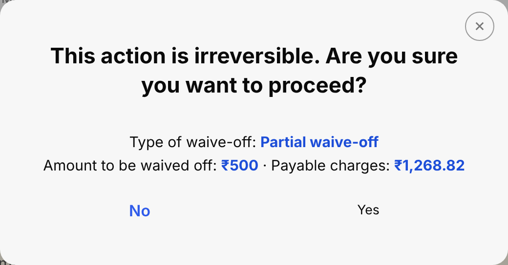
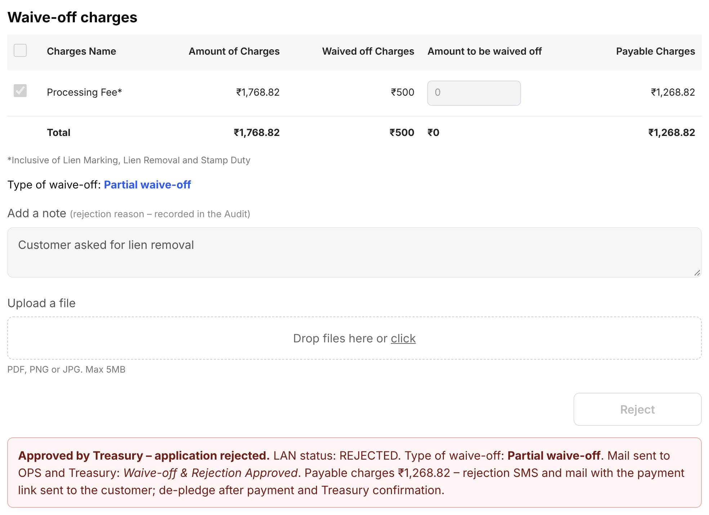
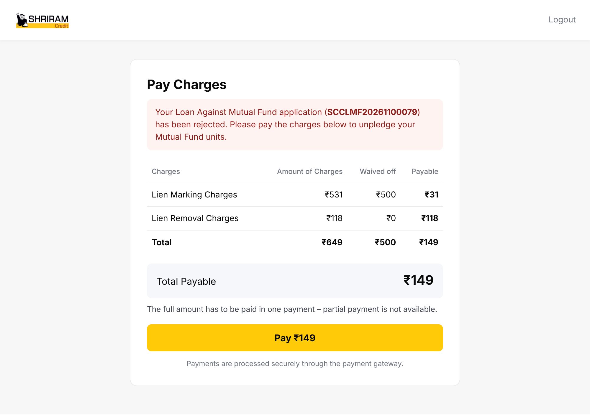
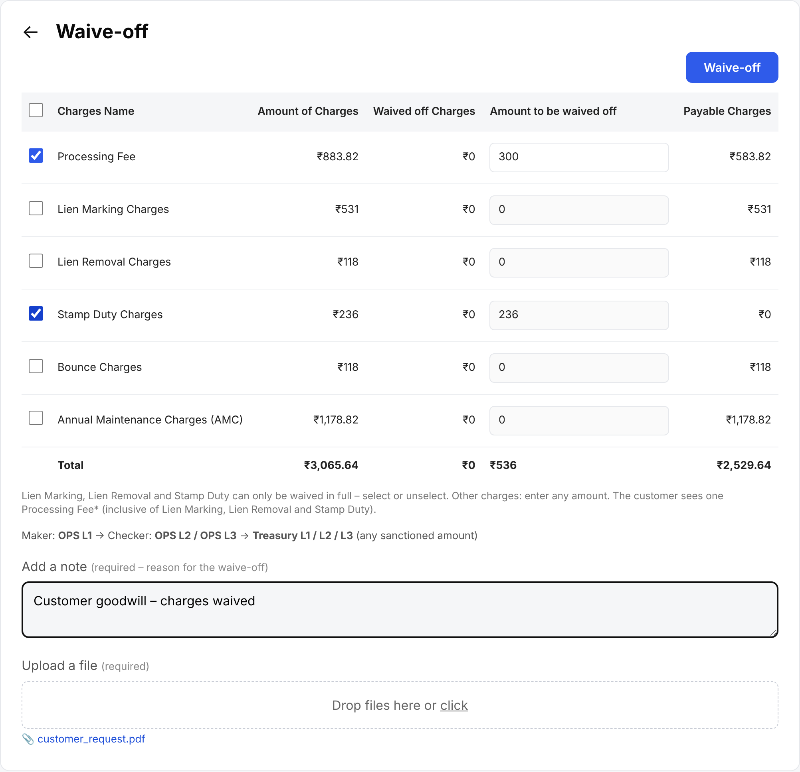
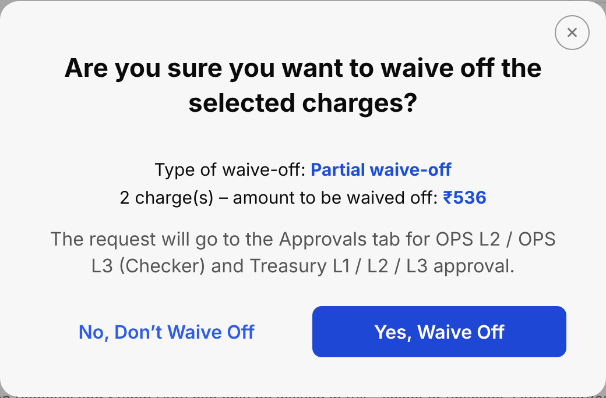

| S | LAN status | Customer dropped off | Charges applicable | Approvals / Waive-off | LAN status can change to | What OPS can do | |
|---|---|---|---|---|---|---|---|
| S 1 | DRAFT | Before pledging the mutual funds | None | Not applicable | INACTIVE (after 30 days) | No action. Moves to INACTIVE after 30 days. | |
| S 2 | DRAFT | After pledging the mutual funds | Lien Marking Charge Lien Removal Charge | Reject | S 2.1 – Reject Without Waive-off | REJECTED | Reject, with or without waive-off. |
| S 2.2 – Reject With Full Waive-off | REJECTED | ||||||
| S 2.3 – Reject With Partial Waive-off | REJECTED | ||||||
| S 3 | DRAFT | After the Sanction Letter is generated | Processing Fee* Charge | Reject | S 3.1 – Reject Without Waive-off | REJECTED | Reject, with or without waive-off. |
| S 3.2 – Reject With Full Waive-off | REJECTED | ||||||
| S 3.3 – Reject With Partial Waive-off | REJECTED | ||||||
| S 4 | DRAFT | After the Loan Agreement e-Sign | Processing Fee* Charge | Reject | S 4.1 – Reject Without Waive-off | REJECTED | Reject, with or without waive-off. |
| S 4.2 – Reject With Full Waive-off | REJECTED | ||||||
| S 4.3 – Reject With Partial Waive-off | REJECTED | ||||||
| S 5 | SUBMITTED | After the E-Mandate | Processing Fee* Charge | Approve | S 5.1 – Approve Without Waive-off | ACCOUNT OPENED | Approve or reject, with or without waive-off. |
| S 5.2 – Approve With Full Waive-off | ACCOUNT OPENED | ||||||
| S 5.3 – Approve With Partial Waive-off | ACCOUNT OPENED | ||||||
| Reject | S 5.4 – Reject Without Waive-off | REJECTED | |||||
| S 5.5 – Reject With Full Waive-off | REJECTED | ||||||
| S 5.6 – Reject With Partial Waive-off | REJECTED | ||||||
| S 6 | ACCOUNT OPENED | After the Loan Account Opening | Processing Fee* Charge | Approve | S 6.1 – Approve Without Waive-off | ACTIVE | Approve or reject, with or without waive-off. |
| S 6.2 – Approve With Full Waive-off | ACTIVE | ||||||
| S 6.3 – Approve With Partial Waive-off | ACTIVE | ||||||
| Reject | S 6.4 – Reject Without Waive-off | REJECTED | |||||
| S 6.5 – Reject With Full Waive-off | REJECTED | ||||||
| S 6.6 – Reject With Partial Waive-off | REJECTED | ||||||
| S 7 | ACTIVE | After the Loan Lodgement | Processing Fee* Charge Bounce Charge Penal Charge Loan Renewal Charge Annual Maintenance Charge (AMC) Bank Swap Charge | S 7.1 – Without Waive-off | No change (stays ACTIVE) | Waive-off only, from the ≡ menu. No approve or reject. | |
| S 7.2 – With Full Waive-off | No change (stays ACTIVE) | ||||||
| S 7.3 – With Partial Waive-off | No change (stays ACTIVE) | ||||||
*Inclusive of Lien Marking, Lien Removal and Stamp Duty
Who approves
| Sanction amount | Maker | Checker | Final approval |
|---|---|---|---|
| Below ₹5 lakh | OPS L1 | OPS L2 or L3 | Treasury L1, L2 or L3 |
| ₹5 lakh and above | OPS L2 | OPS L3 | Treasury L2 or L3 |
Open the LMS prototype (DRAFT loan, Approvals tab).

Charges by scenario
Processing Fee* structure (plus 18% GST)
| Sanction amount | Processing Fee* | Example |
|---|---|---|
| Below ₹1,50,000 | ₹1,499 | ₹1,25,000 → ₹1,499 + GST = ₹1,768.82 |
| ₹1,50,000 to ₹10,00,000 | 1% | ₹5,00,000 → ₹5,000 + GST = ₹5,900 |
| Above ₹10,00,000 to ₹50,00,000 | 0.8% | ₹20,00,000 → ₹16,000 + GST = ₹18,880 |
| Above ₹50,00,000 | 0.5% | ₹1,00,00,000 → ₹50,000 + GST = ₹59,000 |
*Inclusive of Lien Marking, Lien Removal and Stamp Duty
Table columns
| Column | Shows |
|---|---|
| Checkbox | Select a charge. Header checkbox selects all. |
| Charges Name | Lien Marking / Lien Removal (S 2) or Processing Fee* (S 3 onwards). |
| Amount of Charges | Charge with GST. Does not change. |
| Waived off Charges | Amount already waived. ₹0 until approved. |
| Amount to be waived off | ₹0 by default. Editable only after selecting the charge. |
| Payable Charges | Charges – Waived – To be waived. |
| Total | Total of each column. |


Checker

Treasury

When the checker or Treasury rejects




Open the LOS payment screens (prototype).





Open the LMS prototype (Active loan → ≡ → Waive-off).



| Charge | Amount | When it is incurred |
|---|---|---|
| Lien Marking Charge | ₹450 + GST (₹531) | When the units are pledged. Charged separately in S 2 only. |
| Lien Removal Charge | ₹100 + GST (₹118) | When the lien is removed. Charged separately in S 2 only. |
| Processing Fee* Charge | One-time fee as per the Processing Fee structure, + GST (sample ₹1,499 + GST = ₹1,768.82) *Inclusive of Lien Marking, Lien Removal and Stamp Duty | From the Sanction Letter (S 3 onwards). |
| Bounce Charge | ₹100 + GST (₹118) per instance | Active loan, when an EMI bounces |
| Penal Charge | 36% a year on the unpaid interest / EMI | Active loan, on a delay or default |
| Loan Renewal Charge | ₹999 + GST (₹1,178.82) | Active loan, on renewal |
| Annual Maintenance Charge (AMC) | ₹999 + GST (₹1,178.82) | Active loan, every year |
| Bank Swap Charge | ₹250 + GST (₹295) | Active loan, when the repayment bank account is changed |
What OPS can do: Reject, with or without waive-off.
| Charges Name | Amount of Charges | Waived off Charges | Amount to be waived off | Payable Charges |
|---|---|---|---|---|
| Lien Marking Charge | ₹450 + GST (₹531) | Waived earlier (₹0 at start) | Entered by OPS (₹0 by default) | Charges – Waived – To be waived |
| Lien Removal Charge | ₹100 + GST (₹118) | Waived earlier (₹0 at start) | Entered by OPS (₹0 by default) | Charges – Waived – To be waived |
| Outcome | What happens | Customer communication | De-pledge | Accounting entry (UNO) |
|---|---|---|---|---|
| S 2.1 – Rejected – no waive-off | Rejected. Nothing waived. LAN → REJECTED. | SMS and mail with the payment link. | After payment and Treasury confirmation | Paid amount posted in UNO when received. |
| S 2.2 – Rejected – full waive-off | Rejected. All charges waived. LAN → REJECTED. | SMS and mail. No payment link. | Right after the rejection | No entry. |
| S 2.3 – Rejected – partial waive-off | Rejected. Part of the charges waived. LAN → REJECTED. | SMS and mail with the payment link (balance). | After payment and Treasury confirmation | Paid amount posted in UNO when received. Waived amount not posted. |
What OPS can do: Reject, with or without waive-off.
| Charges Name | Amount of Charges | Waived off Charges | Amount to be waived off | Payable Charges |
|---|---|---|---|---|
| Processing Fee* Charge | One-time fee as per the Processing Fee structure, + GST (sample ₹1,499 + GST = ₹1,768.82) *Inclusive of Lien Marking, Lien Removal and Stamp Duty | Waived earlier (₹0 at start) | Entered by OPS (₹0 by default) | Charges – Waived – To be waived |
| Outcome | What happens | Customer communication | De-pledge | Accounting entry (UNO) |
|---|---|---|---|---|
| S 3.1 – Rejected – no waive-off | Rejected. Nothing waived. LAN → REJECTED. | SMS and mail with the payment link. | After payment and Treasury confirmation | Paid amount posted in UNO when received. |
| S 3.2 – Rejected – full waive-off | Rejected. All charges waived. LAN → REJECTED. | SMS and mail. No payment link. | Right after the rejection | No entry. |
| S 3.3 – Rejected – partial waive-off | Rejected. Part of the charges waived. LAN → REJECTED. | SMS and mail with the payment link (balance). | After payment and Treasury confirmation | Paid amount posted in UNO when received. Waived amount not posted. |
What OPS can do: Reject, with or without waive-off.
| Charges Name | Amount of Charges | Waived off Charges | Amount to be waived off | Payable Charges |
|---|---|---|---|---|
| Processing Fee* Charge | One-time fee as per the Processing Fee structure, + GST (sample ₹1,499 + GST = ₹1,768.82) *Inclusive of Lien Marking, Lien Removal and Stamp Duty | Waived earlier (₹0 at start) | Entered by OPS (₹0 by default) | Charges – Waived – To be waived |
| Outcome | What happens | Customer communication | De-pledge | Accounting entry (UNO) |
|---|---|---|---|---|
| S 4.1 – Rejected – no waive-off | Rejected. Nothing waived. LAN → REJECTED. | SMS and mail with the payment link. | After payment and Treasury confirmation | Paid amount posted in UNO when received. |
| S 4.2 – Rejected – full waive-off | Rejected. All charges waived. LAN → REJECTED. | SMS and mail. No payment link. | Right after the rejection | No entry. |
| S 4.3 – Rejected – partial waive-off | Rejected. Part of the charges waived. LAN → REJECTED. | SMS and mail with the payment link (balance). | After payment and Treasury confirmation | Paid amount posted in UNO when received. Waived amount not posted. |
What OPS can do: Approve or reject, with or without waive-off.
| Charges Name | Amount of Charges | Waived off Charges | Amount to be waived off | Payable Charges |
|---|---|---|---|---|
| Processing Fee* Charge | One-time fee as per the Processing Fee structure, + GST (sample ₹1,499 + GST = ₹1,768.82) *Inclusive of Lien Marking, Lien Removal and Stamp Duty | Waived earlier (₹0 at start) | Entered by OPS (₹0 by default) | Charges – Waived – To be waived |
| Outcome | What happens | Customer communication | De-pledge | Accounting entry (UNO) |
|---|---|---|---|---|
| S 5.1 – Approved – no waive-off | Approved. Nothing waived. LAN → ACCOUNT OPENED. | Existing communication. | Not applicable – loan continues. | No entry. |
| S 5.2 – Approved – full waive-off | Approved. All charges waived. LAN → ACCOUNT OPENED. | Existing communication. | Not applicable – loan continues. | Waived amount not posted. |
| S 5.3 – Approved – partial waive-off | Approved. Part of the charges waived. LAN → ACCOUNT OPENED. | Existing communication. | Not applicable – loan continues. | Waived amount not posted. |
| S 5.4 – Rejected – no waive-off | Rejected. Nothing waived. LAN → REJECTED. | SMS and mail with the payment link. | After payment and Treasury confirmation | Paid amount posted in UNO when received. |
| S 5.5 – Rejected – full waive-off | Rejected. All charges waived. LAN → REJECTED. | SMS and mail. No payment link. | Right after the rejection | No entry. |
| S 5.6 – Rejected – partial waive-off | Rejected. Part of the charges waived. LAN → REJECTED. | SMS and mail with the payment link (balance). | After payment and Treasury confirmation | Paid amount posted in UNO when received. Waived amount not posted. |
What OPS can do: Approve or reject, with or without waive-off.
| Charges Name | Amount of Charges | Waived off Charges | Amount to be waived off | Payable Charges |
|---|---|---|---|---|
| Processing Fee* Charge | One-time fee as per the Processing Fee structure, + GST (sample ₹1,499 + GST = ₹1,768.82) *Inclusive of Lien Marking, Lien Removal and Stamp Duty | Waived earlier (₹0 at start) | Entered by OPS (₹0 by default) | Charges – Waived – To be waived |
| Outcome | What happens | Customer communication | De-pledge | Accounting entry (UNO) |
|---|---|---|---|---|
| S 6.1 – Approved – no waive-off | Approved. Nothing waived. LAN → ACTIVE. | Existing communication. | Not applicable – loan continues. | No entry. |
| S 6.2 – Approved – full waive-off | Approved. All charges waived. LAN → ACTIVE. | Existing communication. | Not applicable – loan continues. | Waived amount not posted. |
| S 6.3 – Approved – partial waive-off | Approved. Part of the charges waived. LAN → ACTIVE. | Existing communication. | Not applicable – loan continues. | Waived amount not posted. |
| S 6.4 – Rejected – no waive-off | Rejected. Nothing waived. LAN → REJECTED. | SMS and mail with the payment link. | After payment and Treasury confirmation | Paid amount posted in UNO when received. |
| S 6.5 – Rejected – full waive-off | Rejected. All charges waived. LAN → REJECTED. | SMS and mail. No payment link. | Right after the rejection | No entry. |
| S 6.6 – Rejected – partial waive-off | Rejected. Part of the charges waived. LAN → REJECTED. | SMS and mail with the payment link (balance). | After payment and Treasury confirmation | Paid amount posted in UNO when received. Waived amount not posted. |
What OPS can do: Waive-off only, from the ≡ menu. No approve or reject.
| Charges Name | Amount of Charges | Waived off Charges | Amount to be waived off | Payable Charges |
|---|---|---|---|---|
| Processing Fee* Charge | One-time fee as per the Processing Fee structure, + GST (sample ₹1,499 + GST = ₹1,768.82) *Inclusive of Lien Marking, Lien Removal and Stamp Duty | Waived earlier (₹0 at start) | Entered by OPS (₹0 by default) | Charges – Waived – To be waived |
| Bounce Charge | ₹100 + GST (₹118) per instance | Waived earlier (₹0 at start) | Entered by OPS (₹0 by default) | Charges – Waived – To be waived |
| Penal Charge | 36% a year on the unpaid interest / EMI | Waived earlier (₹0 at start) | Entered by OPS (₹0 by default) | Charges – Waived – To be waived |
| Loan Renewal Charge | ₹999 + GST (₹1,178.82) | Waived earlier (₹0 at start) | Entered by OPS (₹0 by default) | Charges – Waived – To be waived |
| Annual Maintenance Charge (AMC) | ₹999 + GST (₹1,178.82) | Waived earlier (₹0 at start) | Entered by OPS (₹0 by default) | Charges – Waived – To be waived |
| Bank Swap Charge | ₹250 + GST (₹295) | Waived earlier (₹0 at start) | Entered by OPS (₹0 by default) | Charges – Waived – To be waived |
| Outcome | What happens | Customer communication | De-pledge | Accounting entry (UNO) |
|---|---|---|---|---|
| S 7.1 – Without waive-off | Nothing waived. Charges stay in the SOA and are collected before closure. | Existing communication. | At loan closure. | Existing process. |
| S 7.2 – With full waive-off | Full charge waived. SOA updated with a waiver narration. | Existing communication. | At loan closure. | Waived amount not posted. |
| S 7.3 – With partial waive-off | Part of the charge waived. SOA updated with a waiver narration. Balance collected before closure. | Existing communication. | At loan closure. | Waived amount not posted. |
Created by Azhagarsamy Subburaj. For any observation or clarification, please reach out to azhagarsamy.s@shriramcredit.in